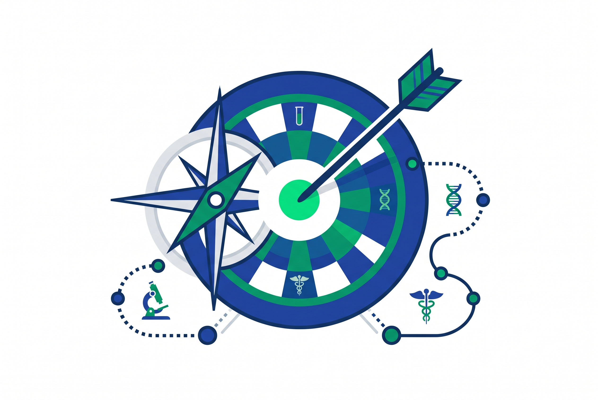
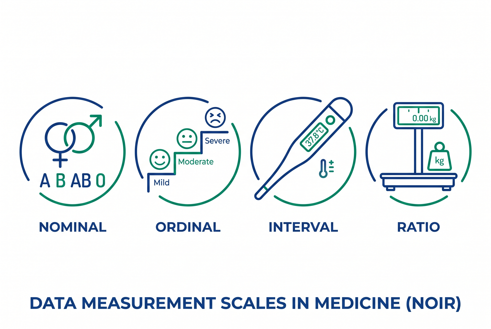
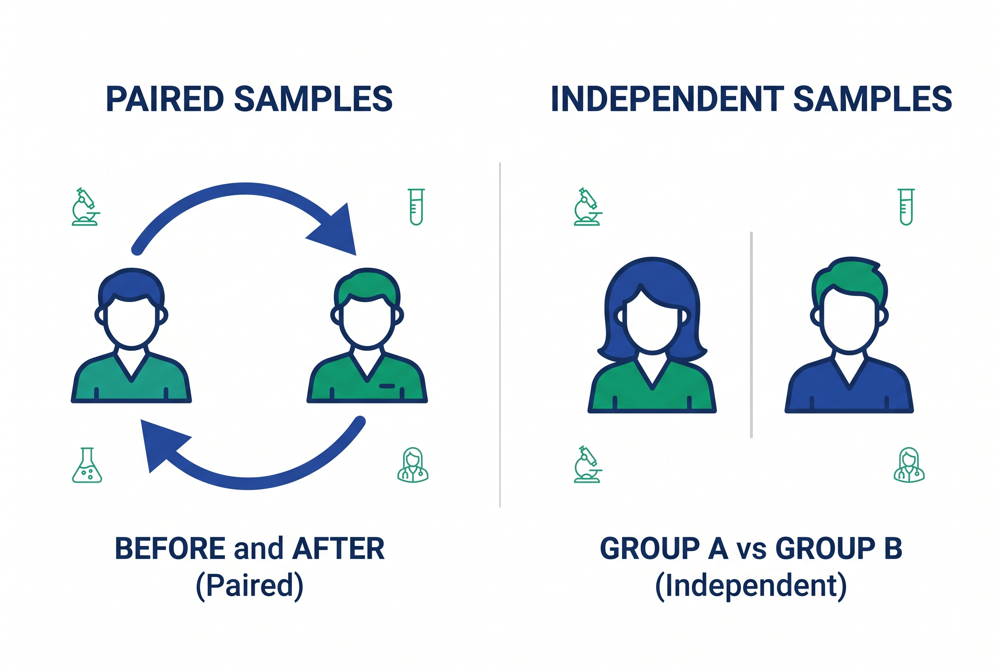
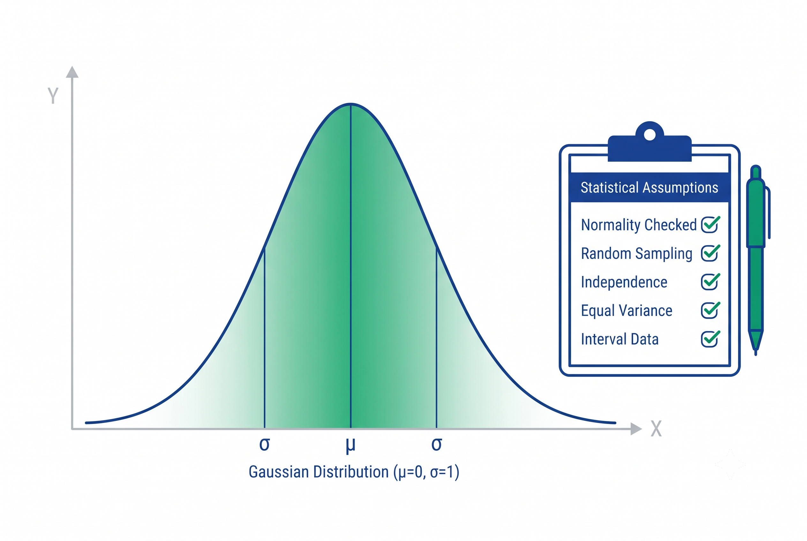

Identitas Produk Akademik
- Fungsi Utama: Memandu mahasiswa kedokteran dalam menentukan uji statistik bivariat untuk proposal skripsi secara valid dan defensibel.
- Penulis: Syarif Rahman Hasibuan, SKM, MKM.
- Institusi: Fakultas Kedokteran, UPN "Veteran" Jakarta.
Aplikasi StatGuide mengintegrasikan substansi metodologi penelitian dengan algoritma Decision Tree untuk memastikan Anda terhindar dari kesalahan fatal dalam analisis data klinis.

Tahapan Belajar & Eksekusi
- Langkah 1: Pemahaman Konsep (Tab 3). Anda diwajibkan membaca 4 halaman teori secara berurutan. Di akhir halaman terdapat kuis yang harus dijawab dengan benar untuk melanjutkan.
- Langkah 2: Akses Bagan Alur (Tab 4). Setelah lulus seluruh kuis, visualisasi diagram pohon terbuka untuk membantu memahami peta besar pembagian uji.
- Langkah 3: Eksekusi Decision Tree (Tab 5). Jalankan simulasi interaktif dengan menjawab pertanyaan spesifik mengenai draf skripsi Anda untuk mendapatkan rekomendasi uji baku.
- Langkah 4: Cheat Sheet (Tab 6). Gunakan matriks komparatif interaktif untuk konfirmasi cepat menjelang meja sidang.
Memilih uji statistik ibarat memilih kendaraan. Anda tidak bisa memilihnya tanpa mengetahui ke mana tujuan Anda. Menetapkan tujuan penelitian adalah fondasi utama yang mendikte seluruh proses analisis data.
Dalam skripsi klinis, tujuan dibagi menjadi 3 arah utama:
- Uji Beda (Komparasi): Membandingkan efektivitas, rerata, atau proporsi antar kelompok (Cth: Perbedaan Kadar Hb Ibu Hamil...).
- Uji Hubungan (Asosiasi): Melihat asosiasi dua variabel sejajar tanpa membuktikan sebab-akibat (Cth: Hubungan Tingkat Stres dengan...).
- Uji Prediksi (Kausalitas): Mencari probabilitas atau model faktor risiko (Cth: Faktor Prediktor Kejadian Sepsis...).

Pisahkan data Anda ke dalam dua rumpun besar:
Kategorik (Data Kelompok)
- Nominal: Setara tanpa urutan (Laki-laki/Perempuan, Golongan Darah).
- Ordinal: Bertingkat bermakna (Stadium I/II/III, Derajat Kepuasan).
Numerik (Angka Murni)
- Interval: Tidak ada nol mutlak. Contoh: Suhu Celsius, Dioptri, Elevasi, Z-score, dan lainnya.
- Rasio: Ada nol mutlak sejati. Contoh: Berat badan (kg), Tekanan darah (mmHg), Kadar Hb (g/dL), Jumlah koloni bakteri.

Kesalahan identifikasi sampel akan langsung membatalkan hasil analisis Anda di hadapan penguji:
- Berpasangan (Paired): Subjek yang SAMA diukur minimal dua kali (Desain Pre-test dan Post-test).
- Independen: Kelompok subjek yang BERBEDA secara total (Kelompok Kasus vs Kontrol, atau Obat A vs Obat B).

Jika data Anda Numerik, Anda wajib melakukan Uji Normalitas (Shapiro-Wilk untuk n ≤50, Kolmogorov-Smirnov untuk n >50).
- Jika nilai p > 0,05 = Data Normal (Gunakan Uji Parametrik).
- Jika nilai p ≤ 0,05 = Data Tidak Normal (Turun ke Uji Non-Parametrik).
Asumsi Spesifik: Uji Chi-Square mensyaratkan sel dengan Expected Count <5 maksimal 20%. Jika gagal, beralih ke uji Fisher Exact.
Berikut adalah pasangan uji parametrik dan non-parametrik berdasarkan kondisi data Anda:
| Kondisi Data | Parametrik | Non-Parametrik |
|---|---|---|
| 2 kelompok independen | Independent T-Test | Mann-Whitney |
| 2 kelompok berpasangan | Paired T-Test | Wilcoxon |
| >2 kelompok independen | One-Way ANOVA | Kruskal-Wallis |
| >2 kelompok berpasangan | Repeated Measures ANOVA | Friedman |
| Korelasi 2 variabel numerik | Pearson | Spearman |

-
Tujuan Analisis?
-
Uji Beda
(Komparasi)-
Numerik
- Independen
- Ind. T-Test /
Mann-Whitney
- Berpasangan
- Paired T-Test /
Wilcoxon
-
Kategorik
- Chi-Square /
Fisher / McNemar
-
-
Hubungan /
Prediksi- Korelasi
- Pearson /
Spearman
- Prediksi
- Regresi Linear /
Regresi Logistik
-
| Tujuan ⇕ | Dependen ⇕ | Jml Kelompok ⇕ | Berpasangan ⇕ | Parametrik ⇕ | Non-Parametrik ⇕ |
|---|